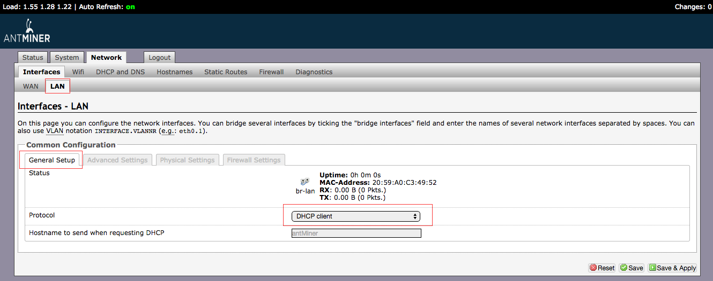
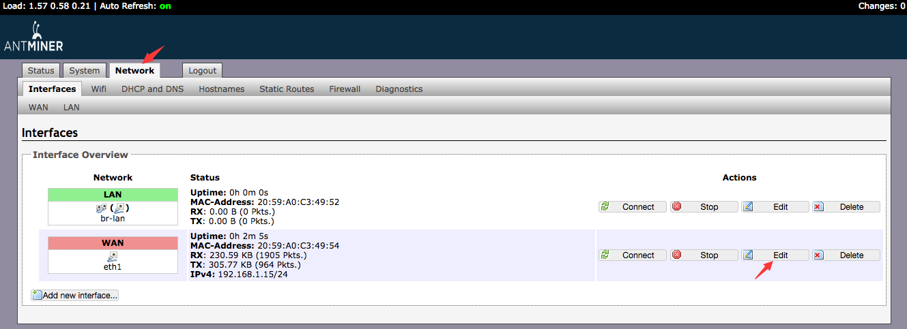
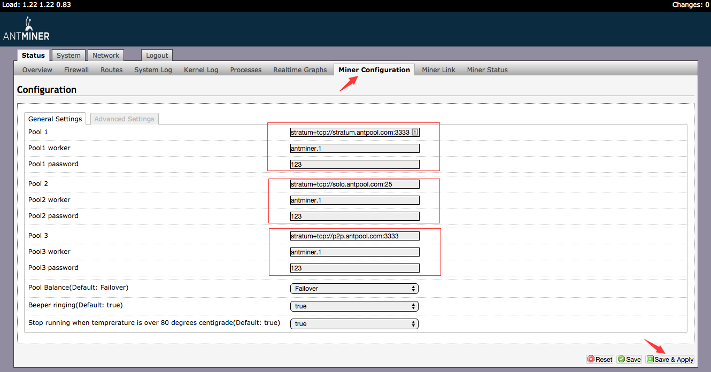
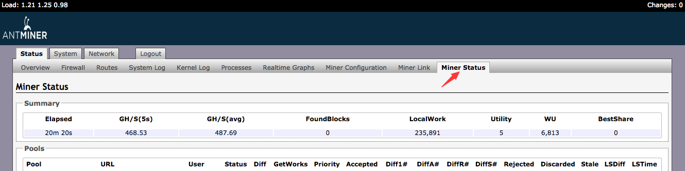
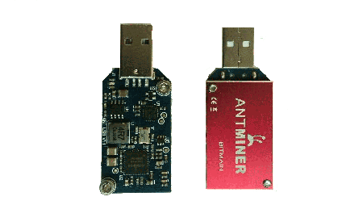
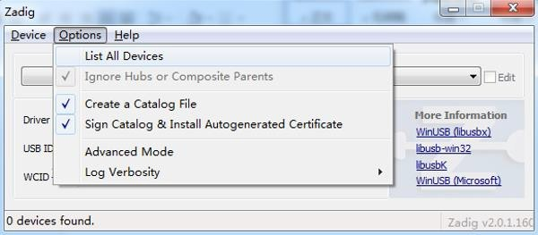
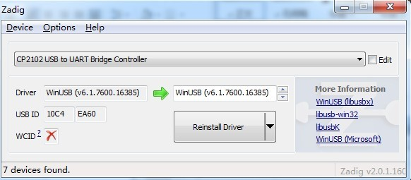
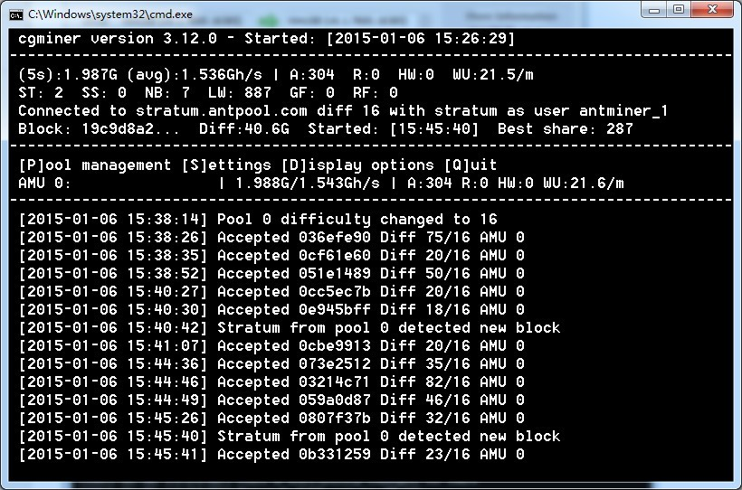
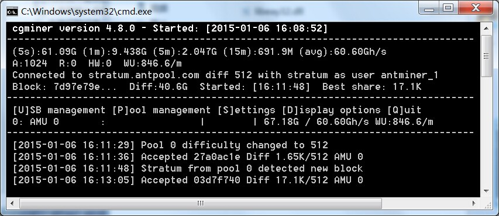

Обзор Антпула
Обзор
Антпул открыт для пользователей со всего мира. БИТМАИН инвестировало значительные средства для развития более эффективного Биткоин пула. Антпул поддерживает оба протокола Соло и р2р. БИТМАИН подтверждает свою приверженность в децентрализации сети Биткоин, для усиления эко системы Биткойна и передать основную долю мощи хашрэйта в руки пользователей.
Антпул поддерживает оба протокола Соло и р2р. По поводу соло майнинга, Антпул собирает все мощностя майнеров, и майнит как один соло майнер. Режим P2P успешно и получает доступ к p2pool сети майнинга.
Узлы пула размещены по всему миру, для улучшения работы и обеспечить достаток. Майнеры автоматически направляются к ближайшим узлам, включая такие страны как США, Гонк Конг, Пекин, Шеньджен, Чингдао, Хангджоу и другие.
Режим майнинга:
Антпул поддреживает оба режима майнинга соло и р2р:
Режим соло:
Режим соло, это система майнинга разработанная коммандой Битмаин. Соло майнинга собирает все мощностя майнеров и майнит как единый майнер. Режим соло в Антпуле подтвержден долгими испытаниями и тестированием, для стабильности и безопасности.
Соло сервер:
solo.antpool.com:3333
solo.antpool.com:443
solo.antpool.com:25
stratum.antpool.com:3333
stratum.antpool.com:443
stratum.antpool.com:25
us.solo.antpool.com:3333
us.solo.antpool.com:443
us.solo.antpool.com:25
P2P Mode:
Режим p2pool предотвращает управление всеми мощностями одной коммандой (хозяевы пула), и это значительно улучшилось со дня запуска Антпула. Все p2pool коды с открытым доступом и загружены на Битмайн Github link https://github.com/bitmaintech/p2pool. Мы надеемся оптимизировать протокол p2p и сети других с заинтересованными инженерами по всему миру.
Мы верим что протокол p2p имеет огромные возможности, хотя в данное время он не развит.
Во первых, общий хэшрэйт протокола p2p невелик, по сравнении со всей сетью, которая составляет около 2% на ноябрь 2014 года. Из этого выходит что p2p еще не совсем стабилен. Есть сетевая преграда, которую мы должны превзойти, тогда протокол p2p будет более стабильным и больше майнеров присоединятся к протоколу. Одна из важнейших причин это не развитие p2p агента майнинга. Если будет хорошо развит агент пула, то p2p.antpool.com хэшрэйт заметно увеличится.
Во вторых, сеть протокола p2pool значительна оптимизирована, но для среднего майнера, этого не достаточно, и для широкополосных майнеров, которым лучше работать на соло майнинге. Мы надеемся мы поможем обществу облегчить майнинг вместе с p2pool узлами которые работают с высокой эффективностью.
Если протокол p2pool сможет предоставить более стабильный выход, и код опубликуется, мы надеемся количество независимых манйеров увеличится по всему миру. По миру много больших майнеров. Мы думаем, для них будет в личных интересах запустить p2pool узлы майнинга, если мы сможем это развить в удобное и доступное устройство.
P2P Сервер:
p2p.antpool.com:3333
p2p.antpool.com:25
Настройки
| Соло | P2P | |
| Stratum URL |
stratum+tcp://solo.antpool.com:3333 stratum+tcp://solo.antpool.com:443 stratum+tcp://solo.antpool.com:25 stratum+tcp://stratum.antpool.com:3333 stratum+tcp://stratum.antpool.com:443 stratum+tcp://stratum.antpool.com:25 stratum+tcp://us.solo.antpool.com:3333 stratum+tcp://us.solo.antpool.com:443 stratum+tcp://us.solo.antpool.com:25 |
stratum+tcp://p2p.antpool.com:3333 stratum+tcp://p2p.antpool.com:25 |
| Имя рабочего |
UserID.WorkerID UserID_WorkerID |
UserID.WorkerID UserID_WorkerID |
| UserID and WorkerID must consist of letters or numbers | ||
| Пароль | Любой | Любой |
| Метод выплат | PPLNS (0Fee) PPS (2.5%Fee) SOLO (1%Fee) |
PPLNS (0Fee) |
| Сумма налога | Не выплачено майнерам для оплаты расходов и бонуса для наших инженеров | Выплачено майнерам |
| Правила платежа | После того как Антпул нашел новый блок и 3 подтверждения | После того как P2pool нашел новый блок и 3 подтверждения |
| Выплаты | Авто выплата ежедневно с 8-10 утра по Пекинскому времени, после указаня адреса Биткойн кошелька | |
Метод выплат:
| Метод выплат | Комиссия | Описание |
| PPLNS | 0% | Переходит к вам, после того как Антпул находит новый блок, и подтверждений более 3 (не уплачены комиссия за транзакции от майнеров для оплаты суммы расодов и бонуса нашим инженерам) Заработок = 25 BTC * ваша доля расчитана из 2.5 круга сложности / Общая доля расчитывается из 2.5 круга сложности |
| PPS | 2.5% | Зарарботок = 25 BTC * Доля расчитана из 1 сложность / настоящая сложность сети |
| SOLO | 1% | Оплачивается 25 BTC вам после того как AntPool находит новый блок который ваш и 3 подтверждения о новом блоке (не уплачены комиссия за транзакции от майнеров для оплаты суммы расодов и бонуса нашим инженерам) Если блок не найден, то нет прибыли от майнинга |
Инструкция майнинга
Антмайнер S3:
IP адрес майнера обозначен на кейсе (над вентилятором), и IP адрес 192.168.1.99 послеедней модели.
Некоторые пользователи сталкиваются с трудностью подсоединенияя, пожалуйста убедитесь что оба, майнер и ПК, находятся в одной сетевой сегментации.
Установка Майнера:
1. Введите IP адрес по умолчанию ANTMINER 192.168.1.99 - Пройдите на страницу регистрации, введите имя пользователя: root, пароль: root
2. Нажмите Сеть - Интерфейс. Под интерфейсом 2 опции: WAN и LAN. LAN это тэстовый интерфэйс для завода. WAN это для пользователей манинга, и пожалуйста держите настройки по умолчанию. Заметка: LAN и WAN в разных IP сегментах! Ссылку WAN не возможно удалить!  Нажмите кнопку Править, пройдите на страницу настройки IP от интерфэйса WAN и держитесь настроек по умолчанию. Пожалуйста настройте на другой IP адрес если у вас как минимум 2 Антмайнера: измените последнюю 2 номер на любую из "99" цифр, которая не была использована. Для примера, вы можете изменить IP адрес 192.168.1.100. Вместе, DNS 192.168.1.1 может быть установлен как 8.8.8.8 (Google) 202.106.0.20 (China Unicom) 114.114.114.114 (China Telecom). Нажмите сохранить\Установить после изменений. 
3. Нажмите статус - Настройки майнера
Вы можете заполнить в 3 группы пула майнинга. Если первая группа "dead", тогда автоматически переведет на вторую группу. Ниже приведены настройки Антпула:
| Pool | URL ссылка | Рабочий | Пароль |
| Pool1 | stratum+tcp://solo.antpool.com:3333 | antminer.1 | 123 |
| Pool2 | stratum+tcp://vip.antpool.com:3333 | antminer.1 | 123 |
| Pool3 | stratum+tcp://solo.antpool.com:443 | antminer.1 | 123 |
Нажмите сохранить и установить. 
4. Пройдите в Статус Майнера, обновите несколько раз при задержке. Вы можете проверить скорость на этой странице, и подтвердить если майнер работает нормально. 
Антмайнер U1:

1 Скачать:
2 установить Driver
Шаг 1：Установить CP210xVCP Driver
Шаг 2：Подсоединить AntMiner U1
Шаг 3：Открыть Zadig, и нажать "Options->List All Devices"" 
Шаг 4: Выбрать CP2102 USB to UART Bridge Controller, и нажать "Reinstall Driver" 
3 Запуск Cgminer
cgminer.exe --bmsc-options 115200:20 -o stratum+tcp://solo.antpool.com:3333 -u antminer_1 -p 123 
Антмайнер U3:

1 Скачать:
2 Устанвить Driver
Шаг 1：Установить CP210xVCP Driver
Шаг 2：Подсоединить Antminer U3
Шаг 3：Открыть Zadig, и нажать "Options->List All Devices"
Шаг 4: выбрать CP2102 USB to UART Bridge Controller, и нажать "Reinstall Driver"
3 Запуск Cgminer
cgminer.exe --bmsc-options 115200:0.6 -o solo.antpool.com:3333 -u antminer_1 -p 123 --bmsc-voltage 0800 --bmsc-freq 1286 
Заказ майнера
Пожалуйста зайдите на официальный сайт Битмайна
BITMAIN (Chinese) BITMAIN (English)
Заказ хэшрэйта
Пожалуйста зайдите на официальный сайт Хашнеста
Отслежка майнера
Пожалуйста пройдите по линку MINERLINK
Вопросы и ответы
- Есть ли расходы связанные с транзакцией?
- 0 расходов за транзакции
- Я не могу попасть на 3333 порт
- Это возможно изза блокировки вашим сетевым оператором. Попробуйте доступ 25.
- Как определить число удачи?
- Заработки подключенные к режиму PPLNS с 0% ставкой. Соотвественно с одинаковым хэшрэйтом, при удачи пула, заработок будет выше.
- Почему я вижу свои мощностя хашрэйта на страничке статус майнера, но не вижу на странице пул майнинга?
- Антпул распределяет прибыль, так что информация появится в иечении 10 минут на экране. Мы работаем над этим, и пытаемся ускорить скорость показа.
- Почему майнер который майнит на p2p.antpool.com, после нахождения блока нет прибыли.
- Доступ майнинга p2p для сети p2pool для майнинга, после как блок найден на p2pool, мы выпишем заработок. Мы стараемся для улучшения P2P и более детальная ифна будет в будущем.
Служба поддержки
| Служба поддержки | Customer Center |
|---|---|
| Форум | Forum |
| Элект адрес | support@bitmain.com |
| Заметки | We are welcome everyone to ask any questions, BITMAIN will try our best to solve the problem |